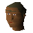

Canifis
Town at 3491, 3487 · Morytania
Open on the world map → Open in knowledge graph →
NPCs
| NPC | Level | Spawns | Notable drops |
|---|---|---|---|
| 24 | 5 | Fur, Grey wolf fur, Vial of water, Vial | |
| 24 | 4 | Fur, Grey wolf fur, Vial of water, Vial | |
| 24 | 4 | Fur, Grey wolf fur, Vial of water, Vial | |
| 24 | 2 | Fur, Grey wolf fur, Vial of water, Vial | |
| 24 | 2 | Fur, Grey wolf fur, Vial of water, Vial | |
| 24 | 3 | Fur, Grey wolf fur, Vial of water, Vial | |
| 2 | |||
| shop | 1 | ||
| shop | 1 | ||
| 3 | |||
 Man | 1 | ||
| 1 | |||
| shop | 1 | ||
| 1 | |||
| Willow the wisp | 37 |